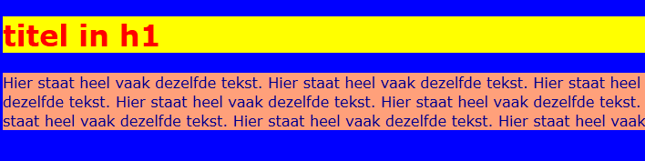
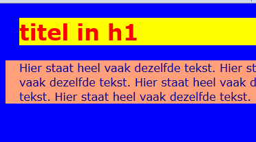
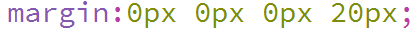
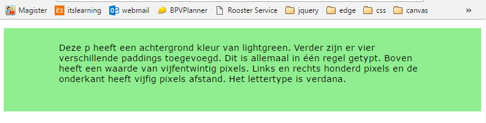

Margin & Padding
Met margin en padding kun je de afstand van de tekst vanaf de zijkant van je scherm bepalen. Bij de vorige opdracht hebben we gewerkt met background-color. We hebben een achtergrond kleur aan de body gekoppeld. Dit kunnen we natuurlijk ook doen aan een h1 of p.
| Voorbeeld 1 |
|  |
| Opdracht 1: Namaken |
|
Open in je editor een nieuw html bestand.
Sla het bestand op als Opdracht12-1.html. |
Als je goed kijkt zie je dat de tekst meteen tegen het begin van de gele en zalm kleur aan staat. Deze afstand kan je zelf met CSS bepalen. Dit doe je met padding. Daarnaast is er margin. Dit is voor de afstand van de tekst vanaf de kantlijn. De afstand bepaal je door een aantal pixels in te stellen. Bijvoorbeeld padding-left:5px;
| CSS Code | Werking |
| padding | Afstand binnen het element zowel links, boven, rechts als onder. |
| padding-top | Afstand binnen het element vanaf boven |
| padding-right | Afstand binnen het element vanaf rechts |
| padding-bottom | Afstand binnen het element vanaf onder |
| padding-left | Afstand binnen het element vanaf links |
| margin | Afstand buiten het element zowel links, boven, rechts als onder. |
| margin-top | Afstand buiten het element vanaf boven |
| margin-right | Afstand buiten het element vanaf rechts |
| margin-bottom | Afstand buiten het element vanaf onder |
| margin-left | Afstand buiten het element vanaf links |
| Opdracht 2: Toepassen |
|
Open in je editor opdracht12-1.html
Sla het bestand op als Opdracht12-2.html. |
| Voorbeeld 2 |
|  |
Je ziet dat de titel, door de margin, 20 pixels vanaf de linkerkant staat. De p staat ook een stukje van de linker kant. Dit klopt, dat is standaard zo ingesteld door je webbrowser. De p staat daarnaast ook nog eens 20 pixels ingesprongen, dit komt door de padding.
De afstand tussen de twee elementen wordt bepaald door de standaard margin die aan zowel de h1 als p zit. Deze kunnen we met CSS aanpassen. Als we van beide elementen namelijk de margin-top en margin-bottom op 0px zouden zetten, staan deze elementen strak tegen elkaar aan.
| Opdracht 3.1: margin toevoegen/verwijderen |
|
Open in je editor opdracht12-2.html
Sla het bestand op als Opdracht12-3.html . |
Bij het h1 element heb je nu drie regels met margin staan. Dit kan gelukkig een stuk eenvoudiger. Je kunt namelijk toevoegen. De eerste 0px staat voor de bovenkant, de tweede 0px voor de rechterkant, de derde 0px voor de onderkant en slaat de laatste 20px op de linker kant. Voor padding geldt hetzelfde. Op die manier hoef je dus niet drie regels te typen in je CSS code, maar is één voldoende.
| Opdracht 3.2: margin vereenvoudigen |
|
Open in je editor opdracht12-3.html
Sla het bestand op als Opdracht12-3.html. |
| Voorbeeld 3 |
|  |
| Opdracht 4: namaken |
|
Open in je editor een nieuw html bestand.
Sla het bestand op als Opdracht12-4.html. |